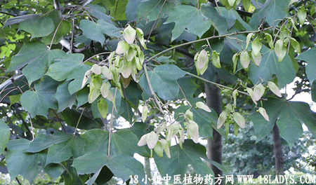

梧桐(中药材植物名:梧桐)(植物科目:梧桐科)

古籍名：梧桐《本草纲目》。
植物名：梧桐。
生长环境：本品为落叶乔木。喜生于湿润的粘质土，多为栽培。
分布：我国和日本。我国各省均有栽植。
入药部分：叶。
采集期：全年，夏季为佳。
自采地点：家种。
性味：性凉、味苦、无毒。
功能：祛风、祛湿、散毒。
主治、用量和用法：1、劳伤咳血：干叶1至1两半，清水煎服，或加猪瘦肉同煎；2、湿火关节痛：干叶5钱至1两半，清水煎服；3、皮肤毒症：干叶适量、煎水外洗；4、丝红病：干叶1至2两，猪瘦肉适量，清水煎服。
验方1：（治湿火骨痛方）梧桐叶1两、贯众1两、清水五碗，煎成一碗半服。
（方解）梧桐叶祛湿清热，贯众燥湿泄热。合治湿火骨痛，有效。
（方歌）湿火骨痛势难当，梧桐贯众是奇方，两药组成同煎服，热清湿解毒难藏。
验方2：（治丝红病方）：梧桐叶1两、丝红草5钱，清水五碗，煎成一碗服，或加猪瘦肉同煎服。
（方解）胃不纳食、体倦、更加上皮肤有如蚁行者，民间称之为丝红病。民间经验用梧桐叶、丝红草两味药，治疗本病，有去黄肿、止痒、开胃之功，无其他副作用。
（方歌）丝红为病体倦怠，面黄骨瘦蚁行皮，梧桐叶于丝红草，瘦肉同煲更奇。
附录：（根）功用与叶同，每次用量1至2两。
参老资料：《中国医学打辞典》梧桐子治小儿口疮，去白，捣汁涂。梧桐皮、苦寒无毒，乌鬓发（烧研，和乳汁涂），杀三虫，治肠痔，脱肛，小儿丹毒恶疮。梧桐花，治癞头，杖丹，火伤。梧桐叶，消肿毒，生毛发，疗痈疽发背，蚀阴恶疮。
《中国医学植物图鉴》鲜根能治风湿疼痛（关节炎），梧桐子能黑发，并治小儿口疮，花可治烫火伤、癞头，叶煎汁内服，有催生作用，色入瘦猪肉煨杂食肉，治小儿疳积，外用可治背痈，熏治白带，投入厕所可防蛆蝇。
《广东验方交流汇编》治风火牙痛方：梧桐叶树根干片1两、猪瘦肉2两煮食。
《湖南省中医单方验方第一辑》祁阳县中医介绍麻疹后两眼红肿不开：椿树叶、梧桐叶子、桃树叶各等分，嚼烂敷头顶，一次两点钟。